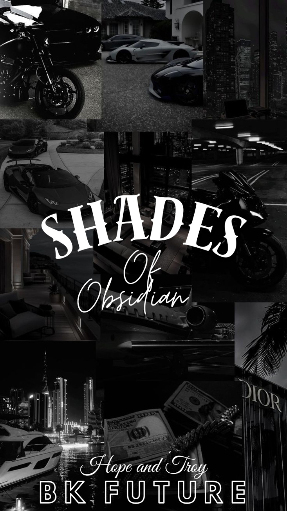
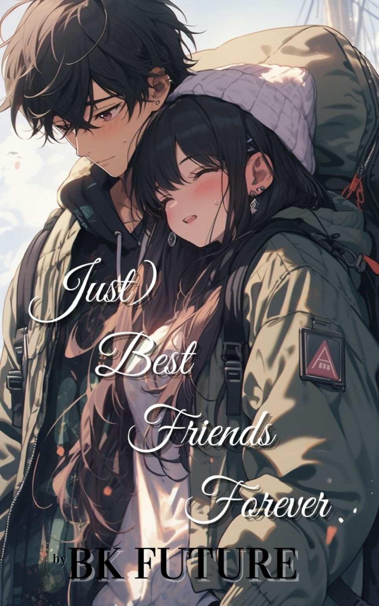
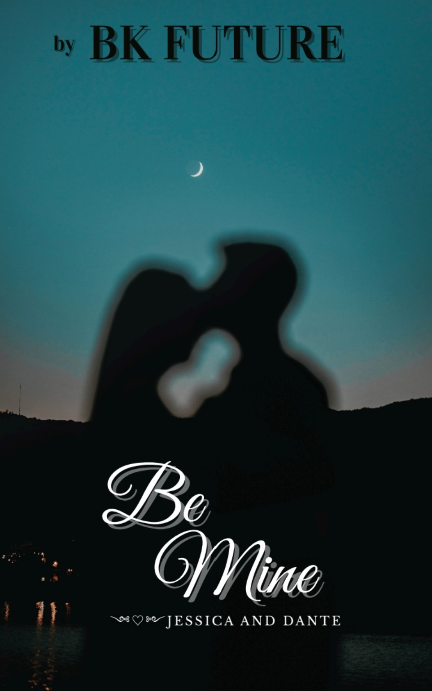
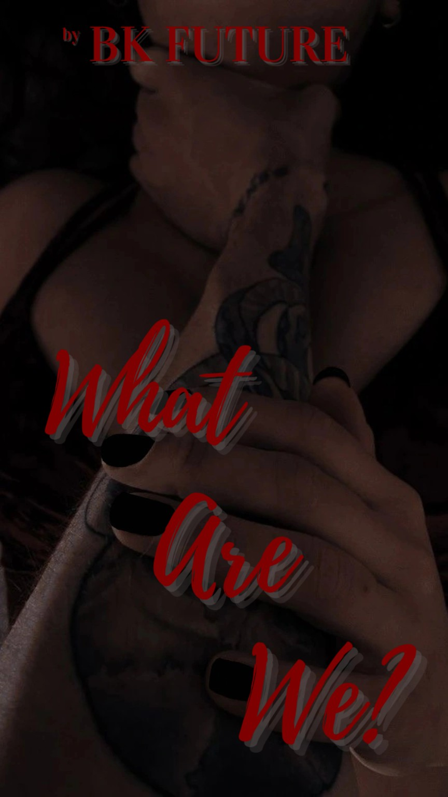
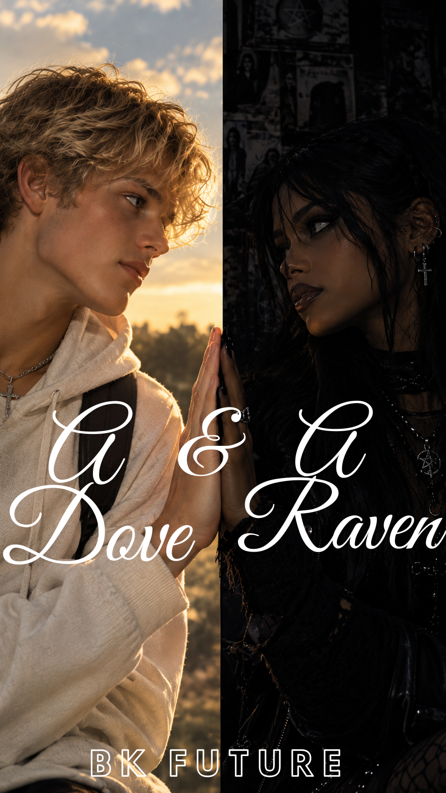

001

Shades of Obsidian
MAFIA • DARK FICTION
MATURE THEMES
She has spent years burying the secrets of
her past, hiding every skeleton behind the
carefully pressed uniform of an ordinary
life. But when a certain Mafia heir walks
into her world, everything she's worked to
hide begins to surface...
VIEW BOOK
002
I Belong to You
MAFIA • ROMANCE • DRAMA
MATURE THEMES
She had a normal life. At least, she thought
she did. Until a powerful Mafia leader walks
into her world and takes an interest in the
one person who was never supposed to become
part of his...
VIEW BOOK
003

The Mafia Beside Me
MAFIA • MYSTERY • DRAMA
MATURE THEMES
She finally found the family she'd always
wanted. But when the oldest sibling begins
disappearing and becoming increasingly
distant, she discovers that the person
standing beside her has been hiding an
entirely different life...
VIEW BOOK
004

What Are We?
GOTH • PUNK • DRAMA
MATURE THEMES
In their world, Goths and Punks don't mix.
She's desperate to earn her place in the
Goth club, but then she gets involved with
a Punk—and discovers he's already tangled
up with someone much closer to her than she
ever expected...
VIEW BOOK
005

Be Mine
DRAMA • MYSTERY • ROMANCE
MATURE THEMES
They've been friends for as long as they can
remember — one carrying everlasting grief,
the other carrying the guilt behind it. But
he has secrets she was never meant to
discover, and whatever is done in the dark
will eventually come to light...
VIEW BOOK
006

(Just) Best Friends Forever
FRIENDS TO LOVERS • DRAMA • FANTASY
MATURE THEMES
They were supposed to be best friends forever.
But between exes, accidents, regrets and
tragedies, friendship slowly becomes
something neither of them can ignore — and
even when the worlds between them change,
love keeps finding a way back...
VIEW BOOK
007

A Dove and a Raven
FICTION • ROMANCE • OPPOSITES ATTRACT
FRIENDS TO LOVERS • DESTINED LOVE
He was raised to be a dove. She was raised to be a raven.
A pastor's son questioning everything he's ever known,
and a goth girl carrying a legacy she never asked for.
They were never supposed to meet—but perhaps some souls
are destined to find each other, even when the worlds they
come from tell them not to...
VIEW BOOK